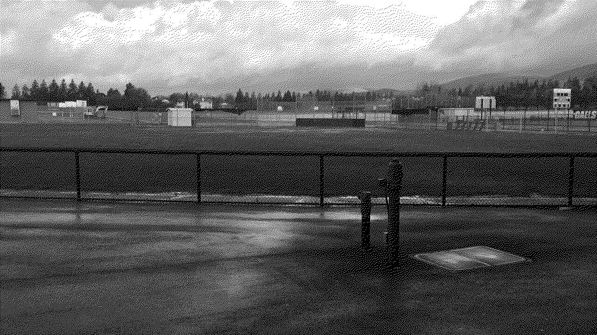
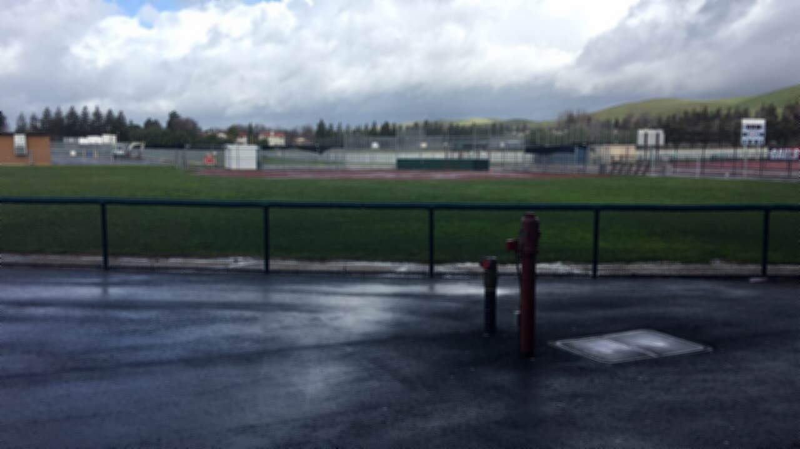
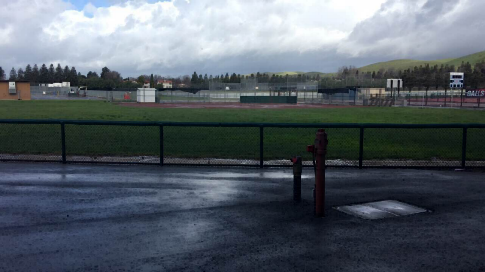
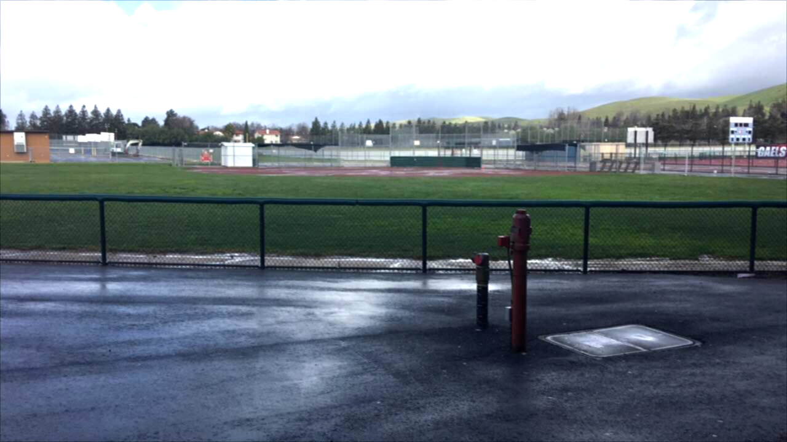

Dates: 1/8/18 - 3/1/18
Description: In this project, we as a group of four are trying to make a virtual toy train set to allow the kids to play with toy trains virtually through software to help our consumer attract the kids attention into playing this. The toy trains had to be visually appealing, and matching in themes in order to catch the eyes of the children. For this project, my role were to develop a mario theme based toy train, to match the overall theme with our entire group, which is about video games. The mario theme based toy train was the technically most difficult train to make. Throughout the project the main challenges that I faced were to be able to model the mario figure parametrically, and making sketches in a way that allow me to extrude the different parts of the figure properly. I ran into the issue of having my constraints all being numerical constraints, instead of properly utilizing some coincidental constraints, which resulted in my sketches, and the figure not being able to parametrically change in size properly. I also ran into the issue of not being able to choose specific features on my sketches for extrusion, which took me hours of troubleshooting to finally being able to close all the loops, and extrude the proper features. Throughout the project I was able to work well with others, and always stayed on task. I managed successfully making a train that fits in with the group's requirements, and themes, which exemplifies our teamwork as a team.
Dates: 9/19/17 - 10/9/17
Description: For this project, the objective is to make a puzzle cube using wood scraps provided by the client that is suitable to be a desktop novelty item, so the client wouldn't be losing money for throwing away excess wood scraps. I have taken the role of being one of the puzzle cube designers for the client. Through this project, I have learned the foundation of modeling using parametric dimensions, and utilizing different sketches, and extrusions to make the desired shape.
This is the Image Artist Project Project that me and my partners worked on from 9/27/2016 to 10/13/2016.
Project Objective: For this project, me and my partner are suppose to come up with a way to modify the images, and wrote some sort of algorithm that can make the images somehow being memorable.
Specific Role In Project: During the project, my role is basically to come up with ideas to modify the images, and I was also the one who suggests the idea of how to write an algorithm.
What I Learned: I've learned that the ability to work well with others really matters in this project, since there's so many libraries of functions that we could look at, and make use of, it'll be really important to share the findings, and ideas to each other, in order to make a better product.
Challenges We've Overcome: We spent the majority of our time to trying to figure out how to make a function that makes a watermark, we've actually built four versions of our code on the water mark function that we were trying to create, but we ended up getting the same error everytime called "__getitem__", so we just ended up using the functions from the "ImageFilter" library to help with our manipulations on the images.
Teamwork/Leadership Skills Exemplified: We spent a descent amount of time on trying to figure out how to make a function that turns images black and white, but we ended up getting the same error called "__getitem__" everytime we tried to make a modification, but my partner found a function that does exactly just that, so we ended up successfully modify the image with the function that my partner found.
Some Example of Our Images:
Original

Black and White

Blurry

Blurry & Increase Darkness

Increase Brightness
This is the App Inventor Project that me and my partners worked on from 9/27/2016 to 10/13/2016. For this project, me and my partners chose three app inventor example project and we got the pirate ship game. We first went through the tutorials for making the example game, then once we finished, we felt like that there was some changes that we could made in order for this game to be more fun, and more attractive. So we decided to create the score keeping function, so that could make the game more interesting. We also want to make the highest score function so that it keep tracks of the high score for each round of the game, and also we need to created the timer function so that the timer counts down for the game to end. It took us nearly the time for the entire project to just figure out how to work with 3 of these functions, but me and my partners worked on it together and we finally get it figured out. What I learned is that in AI2 there's no "start" or "stop" buttons to relie on so it could be hard for some functions to even start working, or for it to stop. But instead we have to create a whole bunch of buttons, and conditional statements for it to work, but that's one of the most important thing that you need to figure out before you can get all of your code working.
This is the Scratch project that me and my partner worked on from 8/31/2016 to 9/14/2016. For this project, me and my partner were trying to make a fight game, and in order to do that we have to create a main character, and other computer default characters to fight against the main character. We worked on the basic moving features that allows the character to move around, and shooting lazers, and we also create 3 opponent characters that is computer default and fights against the main character in 3 different levels. What I did in this project is that I worked on the jumping features of the main character, and also I made the default character being able to move around with the main character so it could track the main character down. And what I learned from this project is that even making a such simple game involves a lot of thinking and problem solving, and you can always find more ideas when working with partners than when you are working alone.